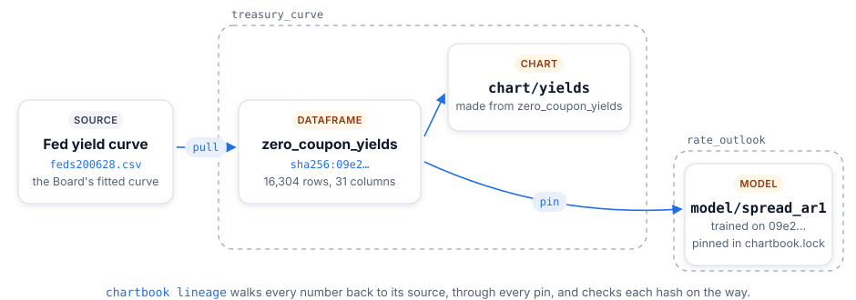
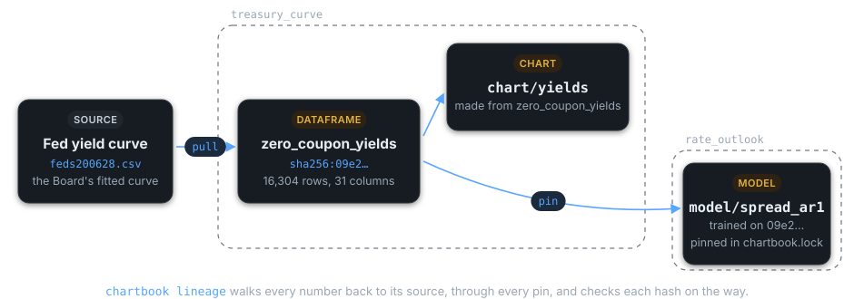

Let Your Agent Use the Catalog#
An agent works from the catalog the way a new teammate does: it finds out what exists, reads what each thing is, uses it, and checks that it can be trusted. Each step is one command, and each answer is small, so the agent reads only what it needs: a line per asset first, a write-up when one matters, the data last.
Step |
The agent runs |
It gets |
|---|---|---|
What is there? |
|
One record per pipeline and asset: its ID, kind, name and description |
What is it? |
|
What a person reads on the asset’s page: a dataframe’s facts, write-up and columns; a pipeline’s README |
Use it |
|
The data, pinned to the exact snapshot it read |
Can it be trusted? |
|
Every snapshot upstream, by commit and hash, checked |
The examples below use the tutorial catalog.
Teach your agent ChartBook#
chartbook install claude-skill
installs a skill for Claude Code: when ChartBook comes up, Claude reads what the commands above do
and when to use each. Any other agent can be pointed at the catalog site’s llms.txt, one line
per asset with a link to its page, which every chartbook catalog build writes at the site’s
root.
What is there?#
$ chartbook ls --json
[
{"kind": "pipeline", "id": "tutorial/treasury_curve", "name": "Treasury Curve",
"description": "The Federal Reserve Board's zero-coupon Treasury yield curve, daily since 1961."},
{"kind": "chart", "id": "tutorial/treasury_curve:chart/yields", "name": "Treasury Yields Since 1961",
"description": "The 2-, 10- and 30-year zero-coupon yields", "pipeline": "tutorial/treasury_curve"},
{"kind": "dataframe", "id": "tutorial/treasury_curve:zero_coupon_yields", ...},
...
]
Every kind is listed: dataframes, charts, models, files, notes and notebooks. The id is what
every other command takes. chartbook ls dataframes --json lists one kind.
What is it?#
$ chartbook get-docs treasury_curve
# Treasury Curve
The Federal Reserve Board's zero-coupon Treasury yield curve: one row a day since 1961, one column
per maturity from 1 to 30 years. ...
$ chartbook get-docs rate_outlook:model/spread_ar1
`spread[t+1] = intercept + slope * spread[t]`, fitted with NumPy on the first 80% of months and
scored on the rest. ...
A pipeline’s name alone gives its README; pipeline:kind/name gives that asset’s write-up. A
dataframe needs no kind, and gets its whole page: its sources and license, rows and dates, its
write-up, and a table of its columns and their types (treasury_curve:zero_coupon_yields). The same works with keywords,
chartbook get-docs --pipeline treasury_curve --chart yields. --path prints where the
write-up’s file is instead of its text.
Use it#
From a pipeline, depend on what the agent found, and read it by name:
chartbook add tutorial/treasury_curve
from chartbook import data
yields = data.load("treasury_curve:zero_coupon_yields", format="pandas")
chartbook add pins the newest snapshot in chartbook.lock, so the agent’s code reads the same
bytes on every run until someone runs chartbook update. From another language,
chartbook path treasury_curve:zero_coupon_yields prints the pinned file’s path. Outside any
pipeline, in a notebook, data.load(pipeline="treasury_curve", dataframe="zero_coupon_yields")
reads the newest snapshot through the catalog.
Can it be trusted?#


Before it builds on a number, an agent can check where it came from:
$ chartbook lineage
tutorial/rate_outlook (this folder)
├── tutorial/macro_basics: tutorial/macro_basics 59a435b, made 2026-11-02 22:14:54 UTC, pins checked
└── tutorial/treasury_curve: tutorial/treasury_curve 59a435b, made 2026-11-02 22:14:45 UTC, pins checked
2 snapshot(s) upstream; no gaps.
chartbook lineage --json gives the same as JSON, and --check exits nonzero on a gap, for CI.
What it checks is what ChartBook guarantees: each pin names a snapshot by commit and the content
hash of every file in it, and the bytes read are those bytes. Whether the code that made them is
right is still a person’s call; the catalog says whose, and at which commit.
Next#
Explore a Catalog: the catalog these examples use, to download
Depending on Another Pipeline: pins, the lockfile and
chartbook updateCLI Reference: every command, and every option of these